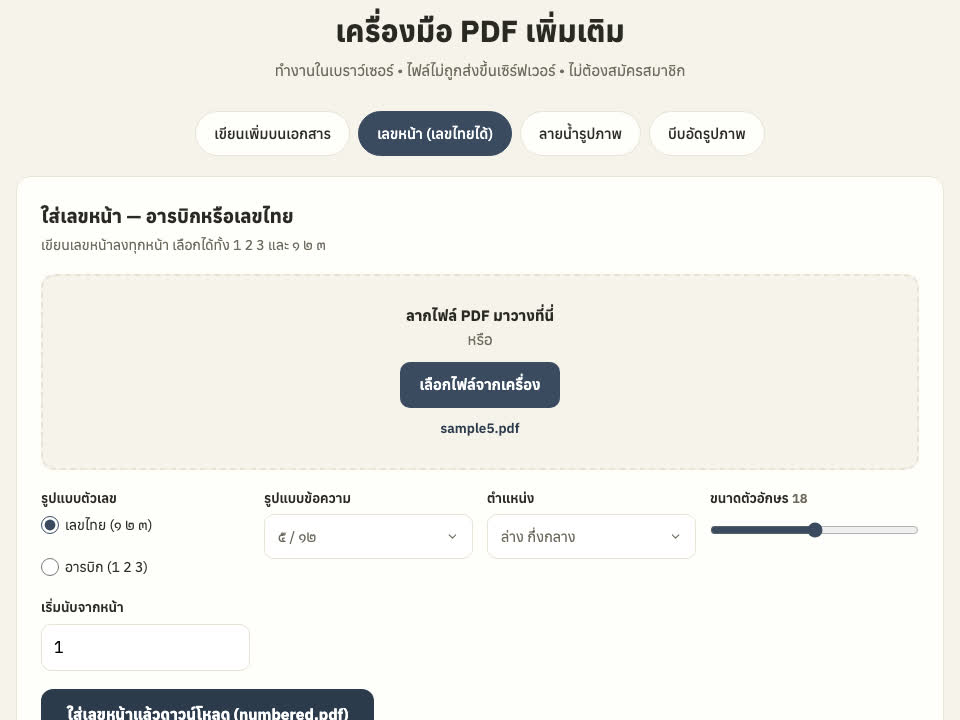
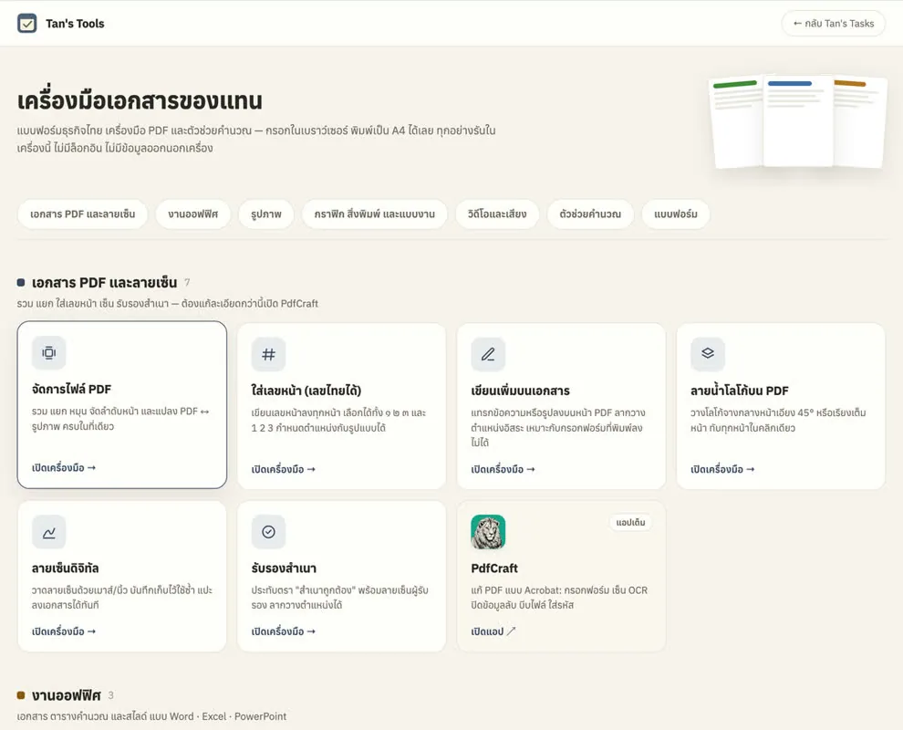
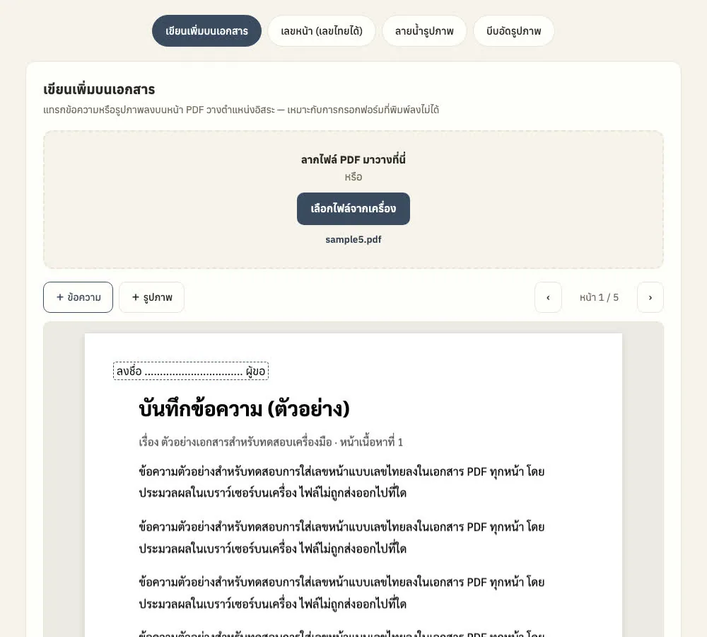
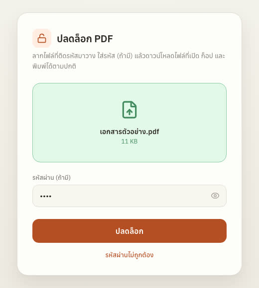
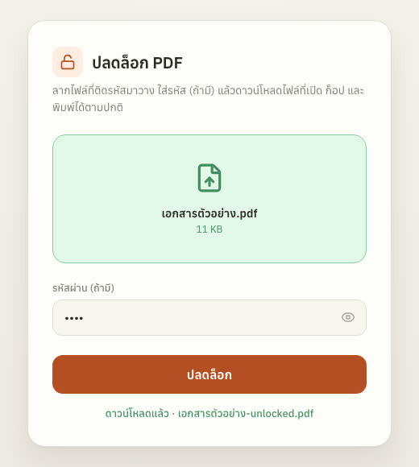
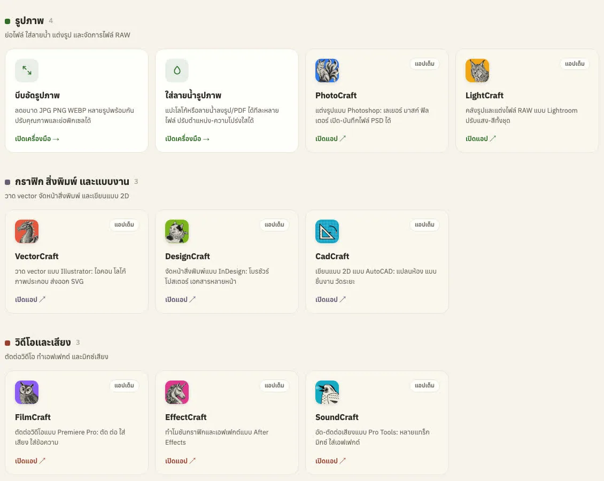
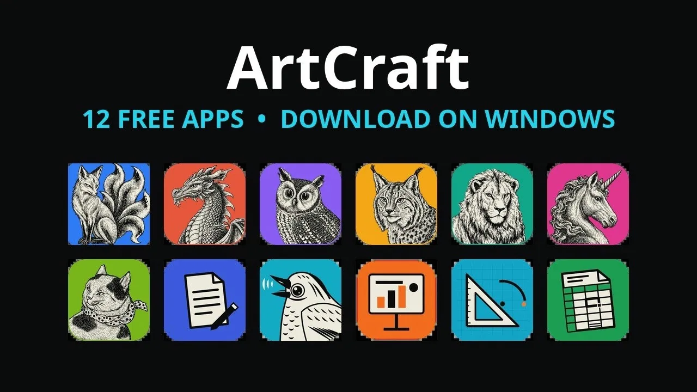
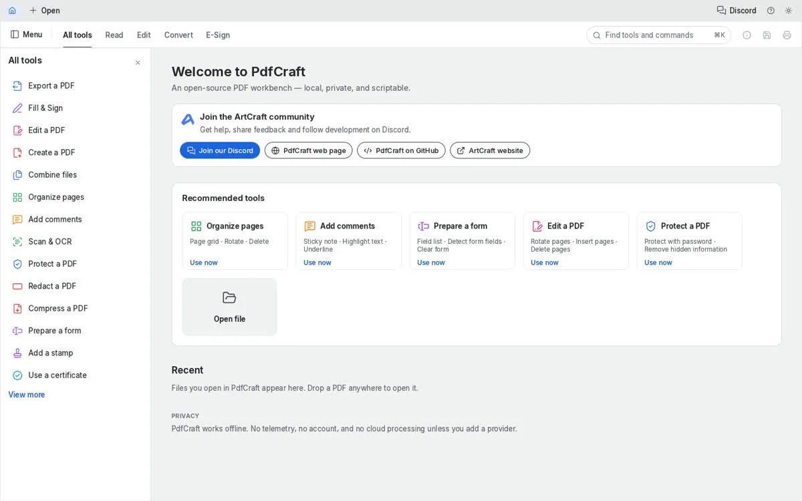

Tan's Tools
กล่องเครื่องมือที่เขียนเองแค่ส่วนที่ขาด แล้วยืมแอปโอเพนซอร์สดี ๆ มาวางไว้ข้างกัน ผลคืองานเอกสารประจำวันจบได้จากเครื่องตัวเอง โดยไม่ต้องเปิดเว็บแปลกหน้า

ใส่เลขหน้า เขียนลง PDF แปะโลโก้ ย่อรูป ปลดล็อก PDF ก่อนส่งเข้า AI และเปิดแอปแต่งรูป ทำสไลด์ ตัดต่อวิดีโอแบบเต็มตัว ทั้งหมดอยู่ในหน้าเดียวของเครื่องมือที่เปิดใช้อยู่ทุกวัน ไม่ต้องสมัคร และไม่ต้องอัปไฟล์ขึ้นเว็บที่ไม่รู้จัก
งานเอกสารเล็ก ๆ มีทุกวัน แต่ทุกครั้งต้องไปพึ่งเว็บคนอื่น
งานแต่ละอย่างใช้เวลาไม่กี่นาที แต่เส้นทางไปถึงเครื่องมือยาวกว่างานเสมอ

อยากใส่เลขหน้าในไฟล์เดียว ต้องค้นเว็บ เลือกเว็บที่ดูน่าไว้ใจที่สุด อัปไฟล์ขึ้นไป รอ แล้วโหลดกลับมา ทั้งที่ในไฟล์อาจมีเลขบัตร ลายเซ็น หรือเอกสารงาน — เครื่องมือฟรีที่ดีมีอยู่แล้วเยอะ แค่มันไม่ได้อยู่ใกล้มือ
ไฟล์ส่วนตัวต้องเดินทางออกจากเครื่องก่อน
เว็บแปลงไฟล์ส่วนใหญ่ทำงานบนเซิร์ฟเวอร์ของเขา แปลว่าเอกสารที่มีข้อมูลส่วนตัวต้องถูกอัปโหลดไปก่อนจึงจะได้ไฟล์ที่แก้แล้วกลับมา
ทำได้ไม่กี่ไฟล์ แล้วก็เจอหน้าให้สมัคร
ฟรีแค่บางขนาด บางจำนวน หรือบางวัน งานเดียวกันพอทำซ้ำในวันถัดไป ก็ต้องเริ่มหาเว็บใหม่อีกรอบ
เลขไทยกับฟอนต์ไทย ไม่ค่อยมีใครทำให้
เอกสารราชการและเอกสารบริษัทหลายแบบใช้เลขหน้าเป็น ๑ ๒ ๓ ซึ่งเครื่องมือทั่วไปมีให้แค่ 1 2 3 และพอใส่ตัวหนังสือไทยลงไปก็กลายเป็นกล่องสี่เหลี่ยม
PDF ที่ล็อกไว้ ส่งเข้า AI ไม่ได้
ไฟล์ที่ตั้งรหัสหรือห้ามคัดลอก ทำให้ AI อ่านเนื้อหาไม่ได้ ต้องปลดล็อกก่อน ซึ่งก็วนกลับไปที่การอัปไฟล์ขึ้นเว็บอีก
งานที่หนักกว่านั้นต้องลงโปรแกรมทีละตัว
แต่งรูปแบบมีเลเยอร์ ทำสไลด์ หรือตัดต่อวิดีโอสั้น ๆ ต้องติดตั้งโปรแกรมใหญ่ หรือสมัครบริการรายเดือน ทั้งที่ใช้แค่บางครั้ง
เอาเครื่องมือไปวางไว้ในที่ที่เปิดอยู่แล้วทุกวัน
Tan's Tasks เป็นเครื่องมือส่วนตัวที่เปิดทุกเช้าเพื่อดูงานวันนี้ อยู่บนเครื่องและมีเซิร์ฟเวอร์เล็ก ๆ ของมันเองอยู่แล้ว เพิ่มอีกหนึ่งหน้าจึงแทบไม่มีต้นทุน

| ทางเลือก | ต้องทำอะไรทุกครั้ง | ไฟล์ไปอยู่ที่ไหน | เหตุที่ตก / รับ |
|---|---|---|---|
| ใช้เว็บแปลงไฟล์ต่อไป | ค้นเว็บ อัปโหลด รอ โหลดกลับ | เซิร์ฟเวอร์ของเว็บนั้น | สะดวกครั้งแรก แต่ทุกครั้งต้องเลือกใหม่ว่าจะไว้ใจเว็บไหน และติดข้อจำกัดของบัญชีฟรี |
| ลงโปรแกรมแยกทีละตัว | ติดตั้ง อัปเดต จำว่าอะไรอยู่ไหน | บนเครื่อง | ไฟล์ไม่ออกจากเครื่องก็จริง แต่ได้ไอคอนเพิ่มเต็มเครื่อง และหลายตัวเป็นของเสียเงินรายเดือน |
| รวมเป็นหน้าเดียวใน Tan's Tasks เลือก | เปิดหน้าเครื่องมือ แล้วเลือกงาน | บนเครื่อง | เขียนเองเฉพาะที่ไม่มีใครทำให้ ส่วนงานหนักใช้แอปโอเพนซอร์สที่มีอยู่แล้ว โหลดมาไว้บนเครื่องครั้งเดียว อัปเดตด้วยคำสั่งเดียว |
เขียนเองให้น้อยที่สุด — อะไรที่มีโอเพนซอร์สดี ๆ อยู่แล้ว ให้ดึงมาใช้และให้เครดิตเจ้าของ เขียนเองเฉพาะช่องว่างที่ไม่มีใครเติม เช่น เลขหน้าแบบเลขไทย หรือการปลดล็อก PDF ที่ไม่ต้องอัปไฟล์
จัดหมวดตาม “งานที่จะทำ” ไม่ใช่ตามว่าใครเขียน
คนที่จะใส่ลายน้ำไม่ได้สนว่าเครื่องมือมาจากไหน จึงวางเครื่องมือด่วนกับแอปเต็มไว้ในหมวดเดียวกัน แอปเต็มมีป้ายบอก และเปิดในแท็บใหม่

เอกสาร PDF และลายเซ็น
ใส่เลขหน้า เขียนเพิ่ม แปะโลโก้ ปลดล็อก — ต้องแก้ละเอียดกว่านั้นค่อยเปิด PdfCraft
งานออฟฟิศ
เอกสาร ตารางคำนวณ และสไลด์ แบบ Word · Excel · PowerPoint
รูปภาพ
ย่อไฟล์ แต่งรูป และจัดการไฟล์ RAW
กราฟิก สิ่งพิมพ์ และแบบงาน
วาด vector จัดหน้าสิ่งพิมพ์ และเขียนแบบ 2D
วิดีโอและเสียง
ตัดต่อวิดีโอ ทำเอฟเฟกต์ และมิกซ์เสียง
ในกล่องจริงยังมีเครื่องมือฟรีพื้นฐานจากแหล่งอื่นที่เก็บไว้ใช้บนเครื่องอีกหลายตัว เช่น รวม แยก หมุนหน้า PDF และลายเซ็น ส่วนนั้นไม่ใช่งานของแทนจึงไม่นำมาแสดงที่นี่
เครื่องมือด่วนที่เขียนเอง — เติมเฉพาะช่องที่ไม่มีใครทำ
หน้าเดียว ประมวลผลในเบราว์เซอร์ทั้งหมด ไฟล์ไม่ได้ถูกส่งไปที่ไหน

ใส่เลขหน้า (เลขไทยได้)
เขียนเลขหน้าลงทุกหน้า เลือก ๑ ๒ ๓ หรือ 1 2 3 และรูปแบบ “หน้า ๕” “๕ / ๑๒” “- ๕ -”
เขียนเพิ่มบนเอกสาร
แทรกข้อความหรือรูปลงหน้า PDF แล้วลากวางตำแหน่งเอง เหมาะกับฟอร์มที่พิมพ์ลงไม่ได้
ลายน้ำโลโก้บน PDF
วางโลโก้จาง ๆ กลางหน้าแบบเอียง 45° หรือเรียงเต็มหน้า ทับทุกหน้าในคลิกเดียว
บีบอัดรูปภาพ
ลดขนาด JPG PNG WEBP ทีละหลายรูป ปรับคุณภาพและย่อพิกเซลได้
ปลดล็อก PDF
ถอดรหัสและข้อห้ามคัดลอกออกจาก PDF ให้ส่งเข้า AI ได้ เรียกใช้ได้ทั้งจากหน้าเว็บบนเครื่องและจากคำสั่ง
ปลดล็อก PDF ก่อนส่งเข้า AI — ใช้ qpdf ตัวเดียว ไม่ต้องอัปไฟล์
งานจริงของเครื่องมือนี้คือหนึ่งบรรทัด ที่เหลือคือทำให้คนไม่ต้องจำบรรทัดนั้น

รหัสผิด บอกเป็นภาษาไทย
รหัสถูก ได้ไฟล์ -unlocked.pdflocalhost:3777 — ลากไฟล์ ใส่รหัสถ้ามี แล้วกดปุ่มเดียว เบื้องหลังคือ qpdf --decrypt- สั่งจาก Terminal —
unlock.shเรียกqpdf --decryptถ้าไฟล์ล็อกแค่ห้ามคัดลอกก็ถอดได้เลย ถ้าตั้งรหัสเปิดไฟล์ให้ใส่รหัสต่อท้าย ได้ไฟล์ใหม่ชื่อ-unlocked.pdfในโฟลเดอร์เดิม - ลากไฟล์วางในหน้าเว็บบนเครื่อง —
bun server.jsเปิดหน้าเล็ก ๆ ที่localhost:3777มีช่องใส่รหัสที่เว้นว่างได้ และบอกเป็นภาษาไทยเมื่อรหัสผิด - ดับเบิลคลิกไฟล์เดียว — ไฟล์
.commandบน macOS เปิดเซิร์ฟเวอร์และเปิดเบราว์เซอร์ให้เอง ไม่ต้องเปิด Terminal
แอปเต็ม 12 ตัวจาก ArtCraft — สคริปต์เดียวโหลด อีกบรรทัดเดียวเสิร์ฟ
ArtCraft เป็นชุดแอปโอเพนซอร์สที่มีเวอร์ชันรันในเบราว์เซอร์ด้วย WebAssembly ไม่ต้องเขียนแอปพวกนี้ใหม่ แค่พาไฟล์มาไว้บนเครื่องแล้วชี้ทางให้ถูก

ถาม GitHub ว่า release ล่าสุดคืออะไร
craft-fetch.sh ไล่ถามทีละแอปแล้วหยิบเฉพาะไฟล์ zip ที่เป็นเวอร์ชันเว็บ ถ้าแอปไหนไม่มีก็ข้ามไปแล้วบอกไว้
แตกไฟล์ลงโฟลเดอร์ของแอปนั้น
ลบของเก่าแล้ววางของใหม่ทับ รันซ้ำเมื่อไหร่ก็คือการอัปเดต ไม่ต้องจำว่าตัวไหนเวอร์ชันอะไร
ดึงไอคอนจริงของแอปมาด้วย
การ์ดในกล่องเครื่องมือจะใช้ไอคอนของแอปเอง ถ้าแอปไหนหาไม่เจอก็ถอยไปใช้ไอคอนเส้นที่วาดไว้แทน
เซิร์ฟเวอร์ตัวเดิมเปิดให้ที่ /craft/<แอป>/
ไม่มีเซิร์ฟเวอร์ใหม่ ไม่มี build ใช้ Python ตัวเดียวกับที่ Tan's Tasks รันอยู่แล้ว

แอปทั้ง 12 ตัวเป็นผลงานของทีม ArtCraft เผยแพร่แบบโอเพนซอร์สภายใต้สัญญาอนุญาต Apache-2.0 ส่วนที่แทนทำคือสคริปต์โหลด การเสิร์ฟจากเครื่อง และการจัดวางแอปเข้าหมวดงานในกล่องเครื่องมือ
ห้าเรื่องที่เจอตอนเอาของคนอื่นมาวางในบ้านตัวเอง
การดึงของที่มีอยู่แล้วมาใช้ ต้องเขียนน้อยจริง แต่สิ่งที่ต้องเขียนคือจุดต่อ และจุดต่อคือที่ที่พังเงียบที่สุด

ปลดล็อก PDF ค้างที่ “กำลังโหลดเครื่องมือ...” ตลอดไป
ตัวปลดรหัสใช้ qpdf ที่คอมไพล์เป็น WebAssembly และมันขอไฟล์ /wasm/qpdf.wasm กับไฟล์ย่อยใน /_next/ จากรากของเว็บ ไม่ใช่จากโฟลเดอร์ที่เก็บไว้ เซิร์ฟเวอร์ตอบ 404 กลับไปเงียบ ๆ หน้าจอจึงหมุนรออยู่อย่างนั้น ไม่มีข้อความผิดพลาดให้เห็น
รวมหรือหมุน PDF แล้วตัวหนังสือออกมาไม่คม
เครื่องมือ PDF พื้นฐานที่เก็บไว้ใช้ เรนเดอร์ทุกหน้าเป็นรูปที่ยาวสุด 1600 พิกเซลและบีบ JPEG ที่คุณภาพตายตัว ไฟล์ที่ได้จึงเบลอทุกงาน และ PDF → รูปออกมาเป็น PNG ไฟล์ใหญ่เสมอ
ตัวหนังสือไทยบน PDF กลายเป็นกล่องสี่เหลี่ยม
ไลบรารีเขียน PDF มีฟอนต์มาตรฐานที่ไม่มีอักษรไทย เลขหน้า ๑ ๒ ๓ หรือคำว่า “หน้า” จึงออกมาเป็นกล่องว่าง
แอป WebAssembly ใหญ่ เปิดครั้งที่สองต้องเร็ว แต่อัปเดตแล้วต้องเห็นของใหม่
ถ้าแคชทุกไฟล์นาน ๆ อัปเดตแล้วจะยังเห็นแอปเก่า ถ้าไม่แคชเลย ทุกครั้งที่เปิดต้องโหลดใหม่หลายสิบเมกะไบต์ และไฟล์ .wasm ที่ส่งไปผิดชนิดจะทำให้เบราว์เซอร์คอมไพล์แบบเร็วไม่ได้
.js กับ .wasm มีรหัสเวอร์ชันอยู่ในชื่อแล้ว จึงแคชได้ยาวเป็นปี ส่วน index.html ให้เช็คใหม่ทุกครั้ง และส่ง .wasm เป็น application/wasm ให้ถูกชนิดเซิร์ฟเวอร์ที่เปิดไฟล์ตามชื่อใน URL เปิดไฟล์อื่นในเครื่องได้ด้วย
ถ้ารับชื่อไฟล์จาก URL แล้วต่อ path ตรง ๆ คนพิมพ์ ../ ก็ถอยออกไปอ่านไฟล์นอกโฟลเดอร์แอปได้ และถ้ายังไม่ได้โหลดแอป หน้าก็จะว่างเปล่าโดยไม่บอกอะไร
craft-fetch.sh ก่อนหลักที่ใช้ตัดสินว่าอะไรได้เข้ากล่อง
กล่องเครื่องมือที่ดีคือกล่องที่หยิบได้ทันที และไม่ทำให้ต้องกังวลว่าไฟล์ไปอยู่ไหน

/craft/pdfcraft/ — ไม่มีบัญชี ไม่มีการอัปโหลด และไม่ได้แก้ไฟล์ต้นทางของเจ้าของ- มีงานจริงที่ทำซ้ำก่อน แล้วค่อยมีเครื่องมือ — ทุกตัวในกล่องเกิดจากงานเอกสารที่เจอเองซ้ำ ๆ ไม่ได้เริ่มจากอยากมีเครื่องมือครบ
- ไฟล์อยู่บนเครื่อง — เครื่องมือด่วนประมวลผลในเบราว์เซอร์ ตัวปลดล็อกใช้ qpdf บนเครื่อง และแอป ArtCraft เสิร์ฟจากโฟลเดอร์ในเครื่อง ไม่มีขั้นตอนอัปโหลดไฟล์
- ไม่ต้องสมัคร ไม่มีค่ารายเดือน — เปิดหน้าแล้วใช้ได้เลย ไม่มีบัญชี ไม่มีโควตาต่อวัน
- ใช้ของที่มีอยู่แล้ว และให้เครดิตเจ้าของ — แอปเต็มเป็นของ ArtCraft ใช้ตามสัญญาอนุญาต Apache-2.0 และไม่แก้ไฟล์ต้นทางของใคร การปรับแต่งทั้งหมดทำตอนเสิร์ฟ
- ส่งต่อให้ AI ได้ง่าย — PDF ที่ปลดล็อกแล้วเปิดอ่านและคัดลอกข้อความได้ตามปกติ ส่งเข้าแชต AI ได้ทันที
หน้าเครื่องมือด่วนโหลดไลบรารี PDF และฟอนต์ไทยจาก CDN ตอนเปิดครั้งแรก จึงต้องต่ออินเทอร์เน็ต แต่ตัวไฟล์ของผู้ใช้ไม่ได้ถูกส่งไปด้วย · แอป ArtCraft รวมกันหลายร้อยเมกะไบต์ จึงไม่เก็บเข้า git ต้องรัน craft-fetch.sh บนเครื่องที่จะใช้